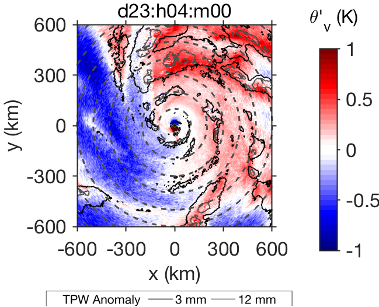

Figure 1. Main components of the mature TC structure in simulated satellite (left) and radar (right) data.
Figure 2. Near-surface virtual potential temperature (colored) and total precipitable water (overlaid) asymmetries on day 23, hour 4, of a TC simulation with no re-evaporation of rainfall. Dashed concentric circles are drawn every 100 km from the TC center.
Spiral bands are one of the most prominent features of tropical cyclones (TCs, see Figure 1). These regions of clouds and rainfall are often the source of major TC hazards, such as inland flooding, mudslides, and tornadoes. Since the advent of radar technology, numerous ideas have been proposed to explain the existence of TC spiral bands. Previous hypotheses include the manifestation of atmospheric waves emanating from the TC inner core, boundary layer instabilities, and the interaction between surface cold pools and low-level vertical wind shear. Despite much effort, no consensus has yet been reached on the underlying physical mechanism responsible for TC bands.
My Ph.D. thesis approached this problem by examining the formation of TC spiral bands in a set of idealized three-dimensional simulations from the System for Atmospheric Modeling. The simulations were run with doubly-periodic horizontal boundaries, fixed sea surface temperature (301K), interactive surface fluxes, no background mean flow, and a constant rotation rate corresponding to latitude 15N. We find that, in simulations with full moist physics and interactive radiative fluxes, spiral bands are consistently collocated with surface cold pools and aligned normal to the low-level wind shear, similar to tropical squall-lines. However, convection still organizes into spiral bands in simulations in which surface cold pools are suppressed (see Figure 2). Non-rotating experiments with imposed background wind shear taken from a TC simulation suggest that, in the absence of surface cold pools, vortex dynamics are necessary for convection to align into spiral bands.
Dissertation: Formation and maintenance of tropical cyclone spiral bands in idealized numerical simulations
Presentations:
- MIT-PAOC Special Seminar, Cambridge, MA, 2018
- 97th AMS Annual Meeting: Robert A. Houze, Jr. Symposium, Seattle, WA, 2017
- Pauline M. Austin Centenary Celebration, Cambridge, MA, 2016 (see MIT news)
- Minorities Striving and Pursuing Higher Degrees of Success in Earth System Science's Poster Session at the National Science Foundation, Washington D.C., 2014
- 31st AMS Conference on Hurricanes and Tropical Meteorology, San Diego, CA, 2014
- 94th AMS Annual Meeting: 26th Conference on Weather Analysis and Forecasting/22nd Conference on Numerical Weather Prediction, Atlanta, GA, 2014